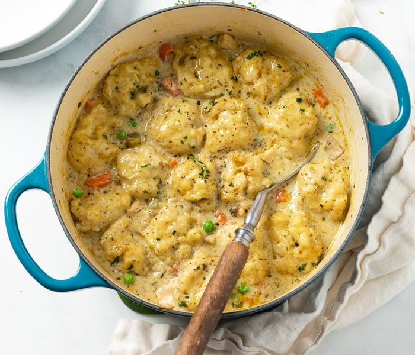

Chicken & Dumplings Recipe

Any time there is a slight chill in the air, you can guess what I am making for dinner…Chicken and Dumplings.
It’s the perfect stick to your ribs kind of dinner that my whole family loves and begs me to make often.
We start with a creamy chicken soup base, loaded with big chunks of chicken, carrots, celery, onion.
Then we add some big fluffy dumplings to round it out. This recipe is made in just 30 minutes or less, from start to finish, so what are you waiting for?!
Ingredients
- Two Tablespoons Butter
- One Medium Yellow Onion
- Three Stalks Celery
- 10.5oz can of Cream of Chicken
- Either store bought biscuits or flour, milk, and butter to make your own
Cooking Steps
- In a large heavy bottomed pot, melt butter over medium-high heat. Add vegetables - onion, celery, carrots and garlic. Cook, stirring often until tender, about 6-8 minutes.
- Add the shredded cooked chicken, chicken broth, evaporated milk, and can of cream of chicken and bring to a simmer. Season soup to taste with salt and pepper.
- Cut the biscuits into quarters (each biscuit will be sliced into 4 equal pieces) and lightly toss them in flour.